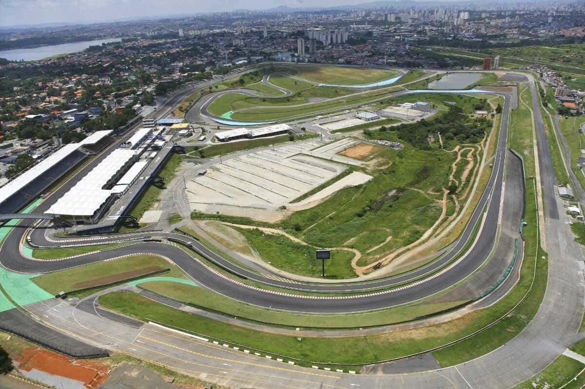

Noticías F1
GP de São Paulo se aproxima
O Formula 1 MSC Cruises Grande Prêmio de São Paulo 2025 ocorrerá de 7 a 9 de novembro no Autódromo de Interlagos. Os ingressos para a Arquibancada Porto estão à venda exclusivamente para clientes do Cartão de Crédito Porto Bank, com retirada disponível nos pontos oficiais a partir de 16 de outubro.
